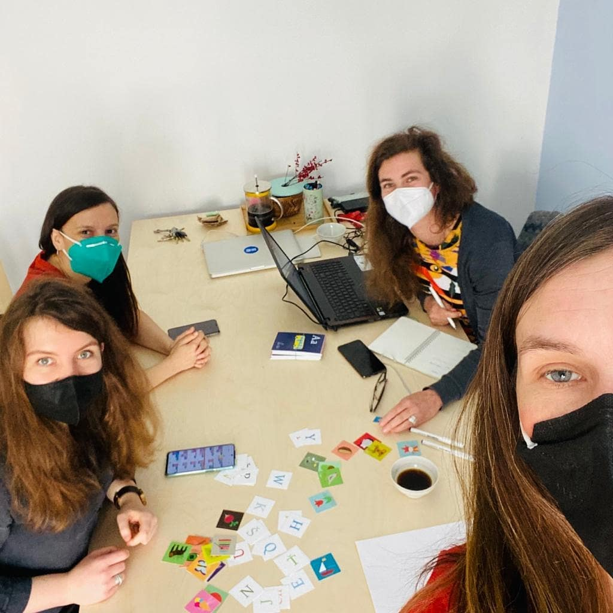

O nás

Jana a Viktorie, dvě tiché osoby, které se poměrně nedávno zakoukaly do frontendu. Vlastně jsme se spíš nechaly okouzlit a užíváme si tu kreativitu, kterou v nás webový vývoj probudil. Dohromady nás svedla náhoda. V rámci kurzu od Czechitas jsme dostaly úkol si najít někoho do dvojice a dohromady pak vytvořit libovolný web. Ukázalo se, že máme obě spoustu nápadů, ze kterých jsme si skoro nemohly vybrat.